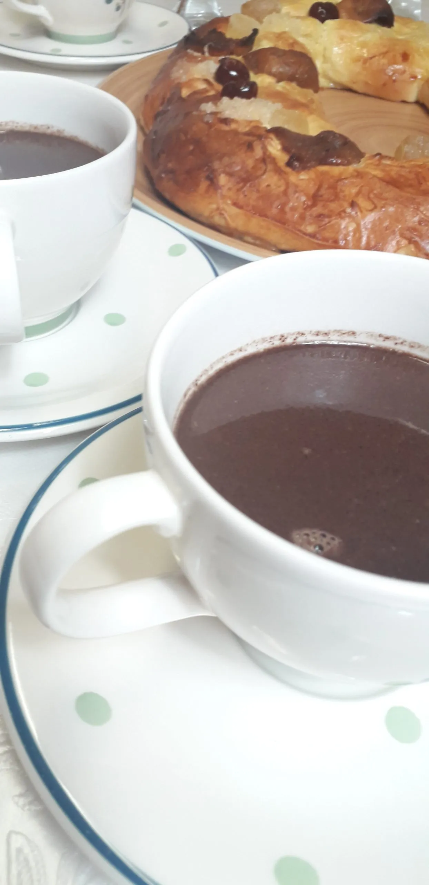

Chocolate Gourmet

Chocolate Gourmet
Ingredients
- 200 g Dark chocolate (70% cocoa)
- 100 g Butter
- 150 g Sugar
- 3 Eggs
- 100 g All-purpose flour
- 1 tsp Baking powder
- 1 tsp Vanilla extract
- Pinch of salt
- Optional: 50 g Chopped nuts (walnuts or hazelnuts)
Instructions
- Preheat the oven to 180°C (350°F).
- Melt the dark chocolate and butter together in a heatproof bowl over simmering water or in the microwave. Stir until smooth.
- In a separate bowl, whisk together the sugar and eggs until light and fluffy.
- Add the melted chocolate mixture to the egg mixture and stir until well combined.
- Add the vanilla extract and mix well.
- In another bowl, sift together the flour, baking powder, and salt.Gently fold until just combined.
- If using, fold in the chopped nuts.
- Pour the batter into a greased and lined baking dish (approximately 20x20 cm or 8x8 inches).
- Bake in the preheated oven for about 20-25 minutes, or until a skewer inserted into the center comes out with a few moist crumbs.
- Allow to cool in the dish for 10 minutes, then transfer to a wire rack to cool completely.
- Once cooled, cut into squares or rectangles and serve.
Notes
This chocolate gourmet recipe is perfect for chocolate lovers and can be served as a dessert or a sweet snack. The rich chocolate flavor pairs well with a scoop of vanilla ice cream or a dollop of whipped cream.
For an extra indulgent treat, you can drizzle melted chocolate over the top before serving.
Store any leftovers in an airtight container at room temperature for up to 3 days, or in the refrigerator for up to a week.
Variations
- For a mocha flavor, add 1-2 tablespoons of instant coffee granules to the melted chocolate mixture.
- For a fruity twist, add 100 g of chopped fresh or frozen berries (such as raspberries or cherries) to the batter before baking.
- For a spiced version, add 1 teaspoon of ground cinnamon or a pinch of cayenne pepper to the dry ingredients.
Serving Suggestions
Serve the chocolate gourmet squares with a scoop of vanilla ice cream or a dollop of whipped cream for a decadent dessert.
Pair with a cup of coffee or a glass of milk for a delightful treat.
Storage Instructions
Store the chocolate gourmet squares in an airtight container at room temperature for up to 3 days, or in the refrigerator for up to a week.
For longer storage, you can freeze the squares. Wrap them individually in plastic wrap and place them in a freezer-safe container. They can be frozen for up to 3 months.
Tips
- Make sure to use high-quality dark chocolate for the best flavor.
- Be careful not to overmix the batter, as this can result in a dense texture.
- Allow the chocolate gourmet to cool completely before cutting, as this will help it set and make it easier to slice.
- Experiment with different types of nuts or add-ins to customize the recipe to your taste.
Home